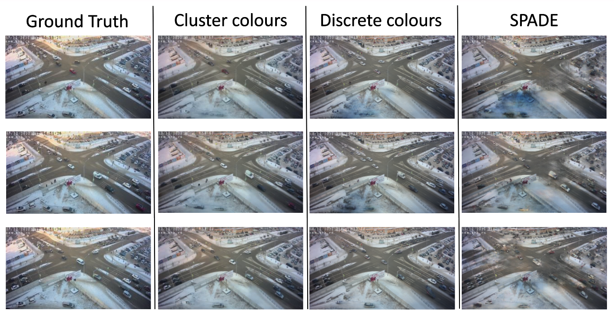

Synthesizing Traffic Datasets using Graph Neural Networks
Daniel Rodriguez-Criado, Maria Chli, Luis J. Manso, George Vogiatzis
Presentation video of the tool to generate images manually and the results from SUMO simulator.
Abstract
Traffic congestion in urban areas presents significant challenges, and Intelligent Transportation Systems (ITS) have sought to address these via automated and adaptive controls. However, these systems often struggle to transfer simulated experiences to real-world scenarios. This paper introduces a novel methodology for bridging this `sim-real' gap by creating photorealistic images from 2D traffic simulations and recorded junction footage. We propose a novel image generation approach, integrating a Conditional Generative Adversarial Network (cGAN) with a Graph Neural Network (GNN) to facilitate the creation of realistic urban traffic images. We harness GNNs' ability to process abstract information alongside segmented images for preserving locality data. The presented architecture leverages the power of SPADE and Graph Attention network (GAT) models to create images based on traffic scenarios simulated by SUMO. These images are conditioned by factors such as entity positions, colours, and time of day. The uniqueness of our approach lies in its ability to effectively translate structured and human-readable conditions, encoded as graphs, into realistic images. This advancement contributes to applications requiring rich traffic image datasets, from data augmentation to urban traffic solutions. We further provide an application to test the model's capabilities, including generating images with manually defined positions for various entities.
Results
Citation
@article{rodriguez2023traffic,
title = {Synthesizing traffic datasets using graph neural networks},
author = {Rodriguez-Criado, Daniel and Chli, Maria and Vogiatzis, George and Manso, Luis J},
booktitle = {International Conference on Intelligent Transportation Systems},
year = {2023},
organization = {IEEE},
}